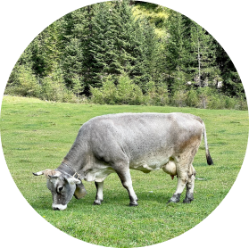

tradition and love
how it’s made?

- Ice is a place where you will become not only a little happier, but also healthier. Health is the main value for us, and we follow it when creating our handmade desserts.
- We use traditional recipes and 100% natural ingredients. Our products are so natural that they can be given to children from the age of three years. Sweets lovers can expect 55 types of ice cream, 15 types of coffee and 23 milkshakes.
- This is enough to choose ice cream and coffee for any mood!
How it’s made?
To make ice-cream heat the cream and milk over a low heat, stirring occasionally, until it almost boils – you’ll see a few bubbles at the edge. Take off the heat and set aside for 30 minutes so the vanilla can infuse.